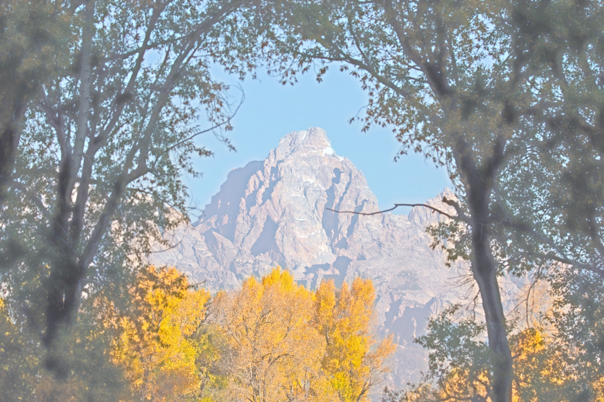
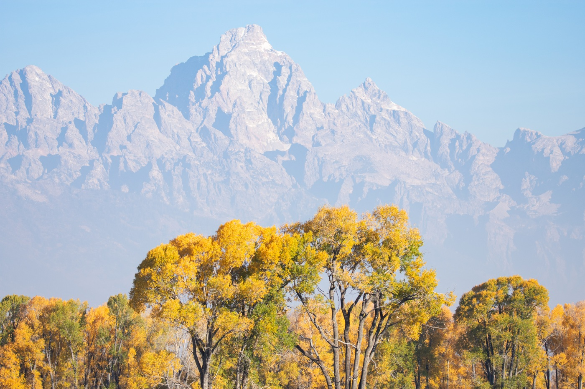
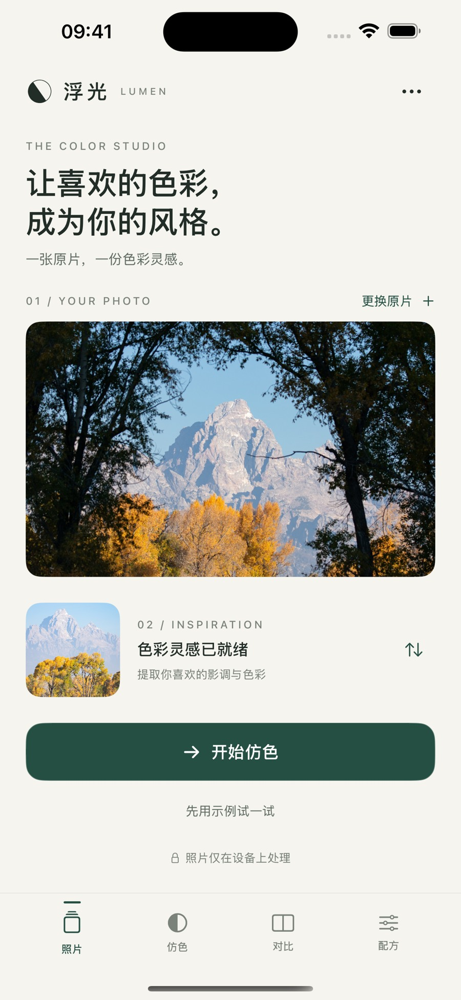

PHOTO / 作品
保存这一次的结果。
将照片导出为 SDR sRGB JPEG，也能保存动态对比 Live Photo，回看前后变化。动态对比是效果展示，不是视频调色。
KACAI / A QUIET SPACE FOR COLOR
看到喜欢的照片氛围，不必从参数开始。
选入自己的原片和一张参考图，
让咔彩帮你找到接近它的光色。


两张照片，一份新的光色
参考的是明暗与色彩关系，保留的是你拍下的内容。
拖动滑块，看看同一张照片的前后变化。
不是只有一张效果图
看看 App 里具体怎么操作。
点击截图可查看完整大图。

上方选入要处理的照片，再添加一张参考图。咔彩分析两张照片的明暗和色彩关系，生成仿色结果。
工作台 → 原片 → 参考图 → 开始仿色
了解版本信息 ↗界面来自项目真实运行记录；部分早期界面仍显示旧名称“浮光”。区域编辑等新增能力以各平台实际版本为准。
把喜欢的光色，留给下一次创作
PHOTO / 作品
将照片导出为 SDR sRGB JPEG，也能保存动态对比 Live Photo，回看前后变化。动态对比是效果展示，不是视频调色。
RECIPE / 配方
保存命名配方，将喜欢的全局光色用于新的原片；调色笔记提供近似参数参考，帮助理解画面的变化。
LUT / 全局映射
导出 33 点 .cube LUT，用于支持它的 sRGB 照片流程。LUT 不携带区域选区与局部保护，也不能直接用作相机 Log LUT。
咔彩分析照片中已经呈现的色彩和明暗，生成近似风格。不识别原作者的滤镜名称，也不还原其真实调色参数。
当前 iOS 开发版本支持区域画笔、擦除、柔边与撤销重做，并可恢复最近一次编辑项目。选区影响当前照片，导出的全局 LUT 不包含选区。
当前 iOS 开发版本提供人脸检测辅助的肤色保护与天空渐变平滑；保护仍可能误判，可按实际结果调整或关闭，并配合区域编辑。
照片分析和仿色在本机完成，无需账号。系统可能从你的 iCloud 图库下载你选择的照片；这属于系统图库行为。